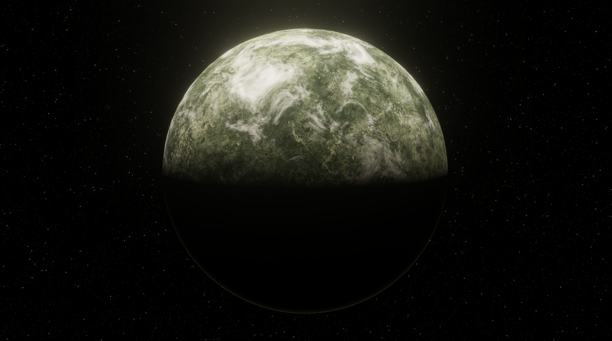

something should be here
Home
3D
2D
Design
Photos
this is
a test
Here I drop cool stuff to keep track of my own progress
some of the cool stuff
⤢

Imaginary planet
Procedurally made in Blender
⤢
Spider
Procedurally made in Blender
⤢
Protein Visualization
MD trajectory in Blender
Exit fullscreen (Esc)